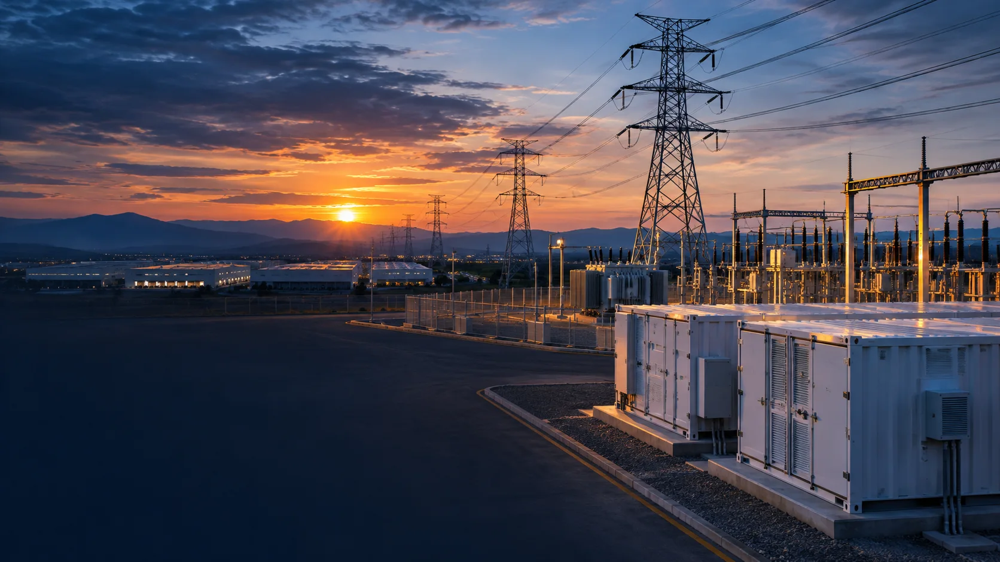
01 / ENERGÍAEnergía e infraestructura
Redes confiables, capacidad energética y condiciones habilitantes para el desarrollo industrial sostenible.
Ver datos de agua, energía y talento →Una visión compartida para el desarrollo industrial inclusivo y sostenible.
Energía, talento y cooperación internacional para una región competitiva, interconectada y abierta al mundo.
El futuro industrial del Bajío-Occidente se construye con decisiones que trascienden las fronteras estatales.
Este encuentro reúne a representantes de Guanajuato, Querétaro, Aguascalientes y Jalisco con líderes de la industria, academia y cooperación internacional para dialogar sobre desafíos comunes y abrir nuevas rutas de colaboración.
La meta es pasar del diálogo a una agenda regional de acción con horizonte al año 2030.
Objetivo: identificar prioridades compartidas y oportunidades de cooperación, tecnología e inversión; reconocer barreras energéticas y brechas de competencias, innovación educativa, empleabilidad e inclusión; y explorar una agenda estratégica regional.
Conectamos los retos industriales de hoy con las capacidades que definirán el mañana.

01 / ENERGÍARedes confiables, capacidad energética y condiciones habilitantes para el desarrollo industrial sostenible.
Ver datos de agua, energía y talento →Inversión nacional y extranjera, transformación tecnológica, integración de cadenas de valor y creación de buenos empleos.
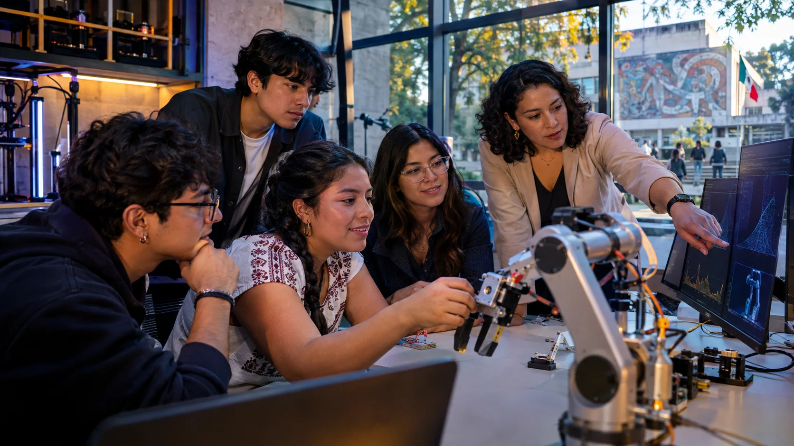
03 / TALENTOCompetencias para el futuro, empleabilidad e inclusión laboral de jóvenes, mujeres y personas con discapacidad.
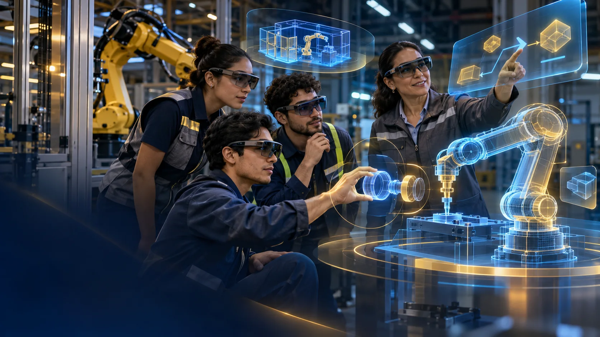
04 / EDUCACIÓNAprendizaje inmersivo, metaversos y herramientas digitales para desarrollar talento directamente en las empresas.
Coordinación regional con continuidad y alianzas que acerquen conocimiento, tecnología, financiamiento y experiencias internacionales.
Guanajuato, Aguascalientes, Querétaro y Jalisco comparten cadenas industriales, retos de infraestructura y una oportunidad histórica de colaborar.
Los cuatro estados participan en igualdad de condiciones. La iniciativa arranca en Guanajuato; Aguascalientes, Querétaro y Jalisco son estados invitados. La asistencia no compromete ni incorpora a ningún gobierno o institución.
Grupo regional que convierte restricciones de capital, energía, información, sitios y talento en proyectos, servicios e infraestructura viables.
Fundación alemana que, desde su oficina en México, impulsa el diálogo, la democracia y el desarrollo.
Secretaría de Economía del Estado de Guanajuato.
Oficina de la ONUDI para México y Centroamérica y el Cónsul Honorario de Alemania para Guanajuato y Aguascalientes.
De la bienvenida a las prioridades regionales y del diálogo a la acción.
Registro, refrigerio y convivencia antes de iniciar el foro.
Siete intervenciones, en el siguiente orden.
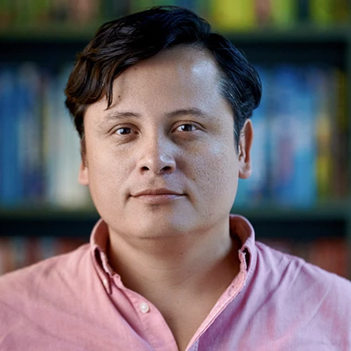
Director General, Bajío Ventures
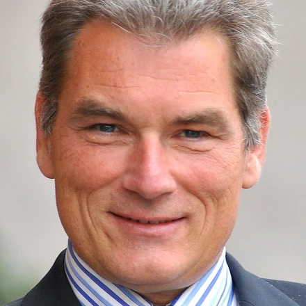
Consejero Delegado para Alemania, Bajío Ventures
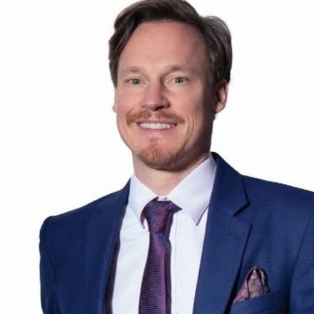
Representante en México, Fundación Konrad Adenauer (KAS)
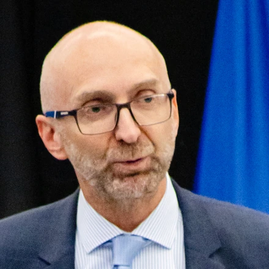
Cónsul Honorario de la República Federal de Alemania para Guanajuato y Aguascalientes
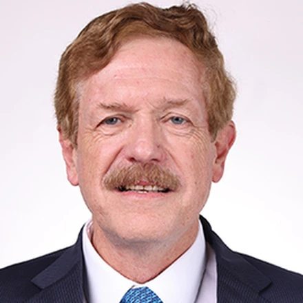
Diputado del Congreso del Estado de Guanajuato, integrante de la Comisión de Educación, Ciencia, Tecnología y Cultura
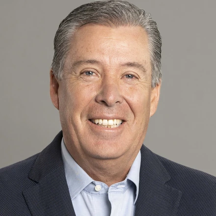
Senador por Guanajuato y Presidente de la Comisión de Desarrollo Regional del Senado de la República
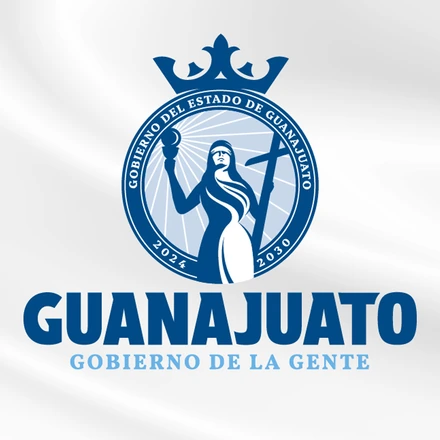
Gobernadora Constitucional del Estado de Guanajuato
Cierre del acto protocolario e inicio de las actividades del foro.
«Desarrollo industrial inclusivo y sostenible: la ruta del Bajío-Occidente hacia 2030»
ONUDI · Organización de las Naciones Unidas para el Desarrollo Industrial. Participará el representante o, en su representación, la oficial nacional y representante adjunta.
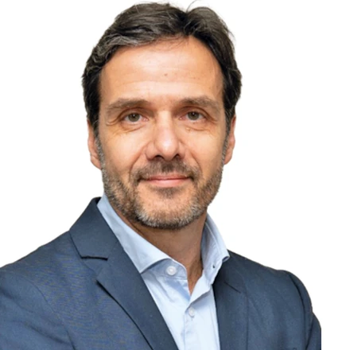
Representante, Oficina de la ONUDI para México y Centroamérica
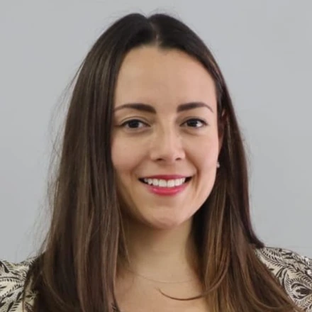
Oficial Nacional y Representante Adjunta, Oficina de la ONUDI para México y Centroamérica
«Energía como motor del desarrollo industrial del Bajío-Occidente»
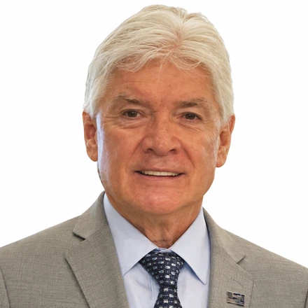
Especialista en infraestructura eléctrica
Una agenda compartida para el Bajío-Occidente

Secretaria de Economía del Estado de Guanajuato
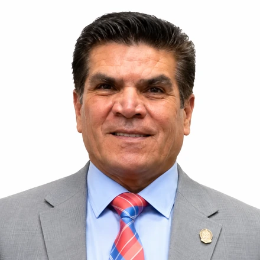
Director General, Agencia de Energía del Estado de Aguascalientes
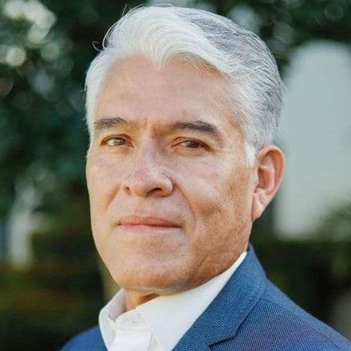
Director General, Agencia de Energía del Estado de Querétaro
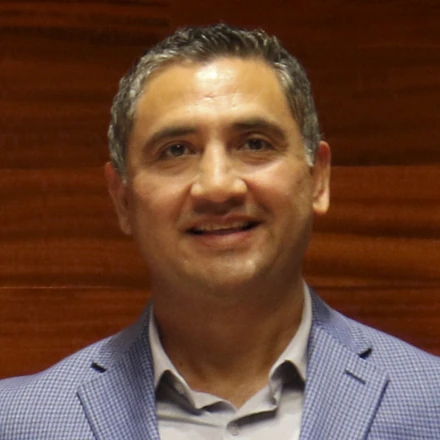
Director General, Agencia de Energía del Estado de Jalisco
Especialista en infraestructura eléctrica
Director General, Bajío Ventures
Aportaciones y definición de prioridades regionales.
Una agenda compartida de competencias, empleabilidad e inclusión para el Bajío-Occidente
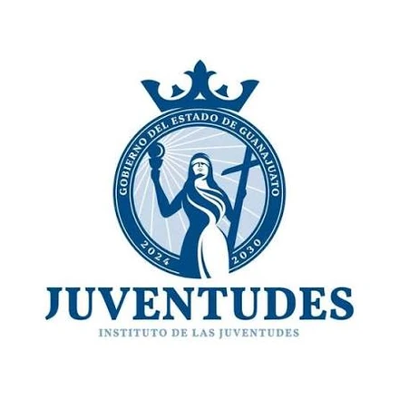
Participante del programa Juventudes por el Mundo del Instituto para el Desarrollo y Atención a las Juventudes del Estado de Guanajuato
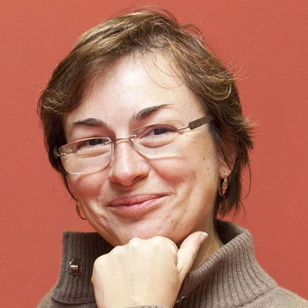
Representante País, AVSI en México
Director General, Guanajuato Puerto Interior
Diputado, Congreso del Estado de Guanajuato
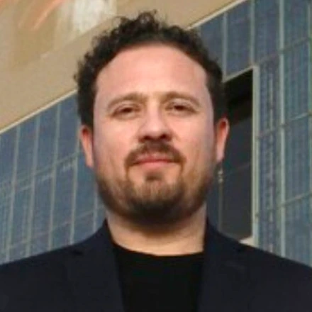
Secretario de Innovación y Tecnología del Municipio de Querétaro
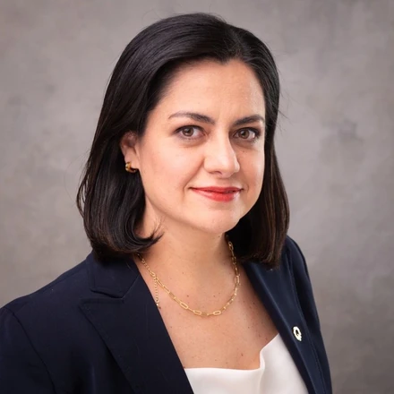
Presidenta de la Comisión de Innovación, Consejo Coordinador Empresarial (CCE)
Anuncio de intención de crear la Mesa de Trabajo BAJÍO-OCCIDENTE 2030, con gobernanza compartida y participación voluntaria.
Director General, Guanajuato Puerto Interior
Representante en México, Fundación Konrad Adenauer (KAS)
Director General, Bajío Ventures
Cóctel con bocadillos, bebidas y convivencia.
Las participaciones señaladas como «Por confirmar» están pendientes de validación. La conferencia magistral corresponde a la ONUDI, con las alternativas de representación indicadas.
Confirmar asistenciaDurante la jornada habrá una plataforma digital, accesible mediante un código QR que se compartirá durante el evento, para recoger preguntas, propuestas y compromisos.
Escribe tus preguntas durante el foro y vota las de otras personas. Las más votadas se responderán en vivo; las demás tendrán respuesta por escrito.
Registra propuestas, expresa interés en sumarte a la Mesa de Trabajo y señala los compromisos voluntarios de tu organización.
El Encuentro de bienvenida y el Brindis por el Bajío-Occidente brindan espacios para conversar directamente con autoridades, ponentes y participantes.
Una agenda con continuidad requiere prioridades claras, propuestas y compromisos voluntarios. Estos son los resultados que se buscará construir en el foro.
Una matriz inicial de prioridades en energía e infraestructura para la industria.
Identificación de brechas prioritarias para jóvenes, mujeres y personas con discapacidad.
Dos o tres líneas de proyectos o pilotos que contribuyan a la Agenda Estratégica 2027–2030.
Anuncio de intención de crear la Mesa de Trabajo BAJÍO-OCCIDENTE 2030, con gobernanza compartida y participación voluntaria.
Documento con las propuestas y compromisos registrados durante el foro.
El 3 de diciembre es el Día Internacional de las Personas con Discapacidad; por ello, la inclusión laboral es un tema central de esta conversación.
En una sede emblemática de la capital del estado, reuniremos a una comunidad selecta de líderes para abrir un diálogo estratégico de alto nivel.
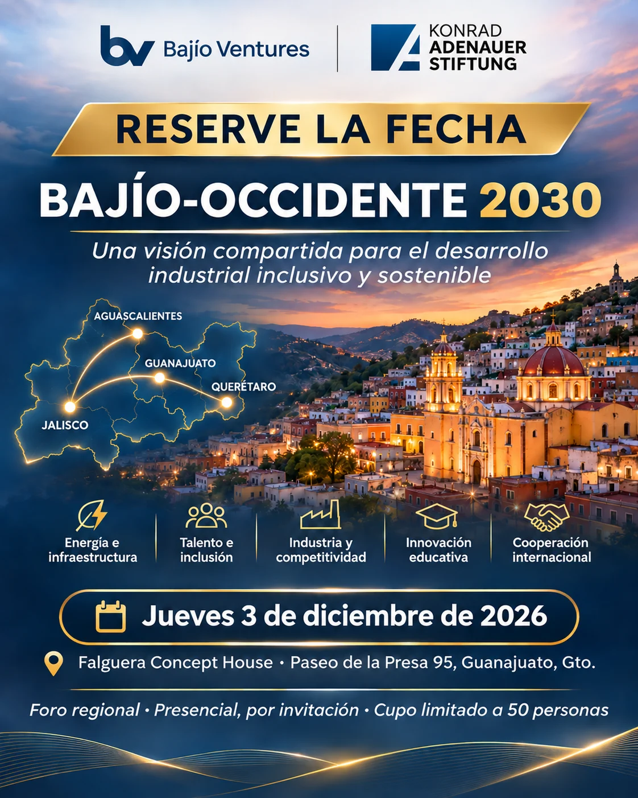
No. Es un encuentro presencial, por invitación y con aforo limitado a 50 personas, incluidos ponentes.
Para confirmar su asistencia, es necesario realizar su registro en Luma: BAJÍO-OCCIDENTE 2030. El foro es presencial y por invitación.
El foro se celebra el jueves 3 de diciembre de 2026, de 8:00 a 14:30 h. El Encuentro de bienvenida y registro inicia a las 8:00 h; el acto protocolario comienza a las 8:40 h. El brindis y cóctel inicia a las 13:10 h.
Le sugerimos realizar su registro en Luma a la brevedad, a más tardar el 30 de noviembre de 2026. El cupo es limitado a 50 personas, incluidos ponentes.
Para dudas o aclaraciones adicionales, contacte por WhatsApp al +52 462 164 3239 a Germán Bonilla Bermúdez, Director de Operaciones de Bajío Ventures. También puede escribir a german@bajioinvest.com. La confirmación de asistencia se realiza mediante el registro en Luma.
Foro presencial, por invitación. Cupo limitado a 50 personas, incluidos ponentes. Para confirmar su asistencia, es necesario realizar su registro en Luma.
¿Tiene alguna duda o aclaración adicional?
Germán Bonilla Bermúdez · Director de Operaciones, Bajío Ventures